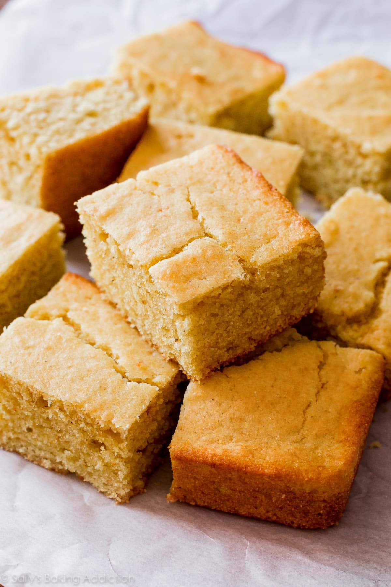

Cornbread recipe

Description
Cornbread is a traditional southern food. It's been around
for a long time. There is a reason why people eat it to This
day and it is because it is good. This is a recipe to make
delicious cornbread that will leave you wanting more. Perfect
for a side dish (especially with chili) or a quick snack!
Ingredients
- All purpose flour
- Yelow cornmeal
- Baking powder
- Salt
- Two eggs
- Pure maple syrup or honey
- Whole milk greek yogurt
- Milk
- Butter
Steps
- Get a 9x9 inch pan or a 8x8 inch pan and either butter it
of spray with nonstick cooking spray
- Add all of the dry ingredients to a bowl and whisk them together
- In a separate bowl mix together all of your wet ingredients besides
the melted butter until well-combined.
- Add the dry ingredients to the wet and stir together until your batter
forms. Stir in the butter last and be sure to not overmix!
- Bake your cornbread for 18-25 minutes until a toothpick
comes out clean. Serve warm with butter & honey!